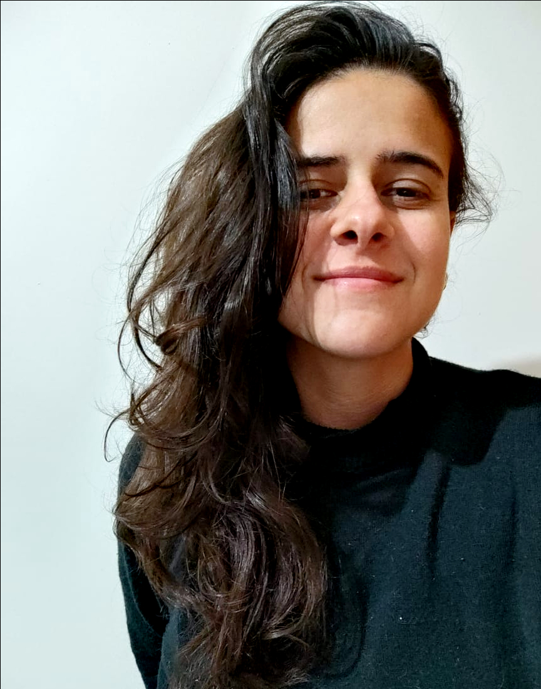

Porfólio Web
Nome: Natália Brasil Silveira

Oláaa, esse é o meu Portfólio Web!
Tenho 27 anos, atualmente moro no estado de São Paulo, na cidade de Piracicaba.
Minhas Soft Skills
- Responsavel
- comunicativa
- Gosto de trabalhar em equipe
- flexivel
Minhas Hard Skills
- HTML
- CSS
- JavaScript
- C++
Algumas curiosidades sobre mim :)
- Sou apaixonada por música (um dia pretendo aprender algum instrumento)
- Sou corredora amadora nas horas vagas
- Sou formada em Zooctecnia pela UNESP
- Minha banda favorita é Florence+Machine
- Minha série preferida é Game of Thrones
Links e alguns sites que gosto:
Minha foto
Site do James Webb